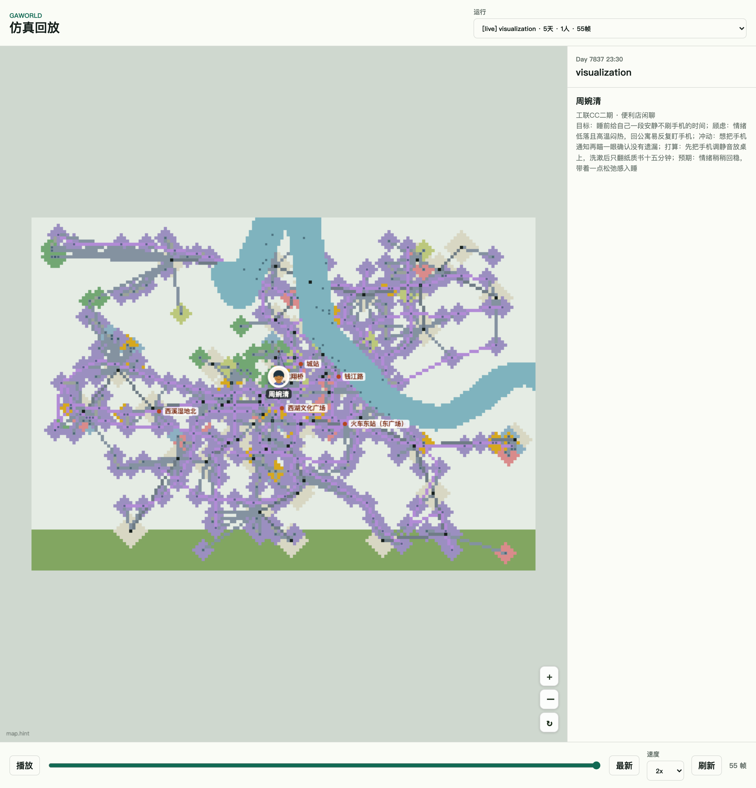
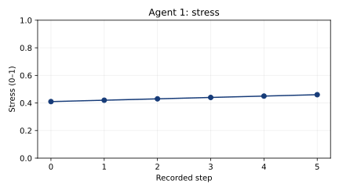
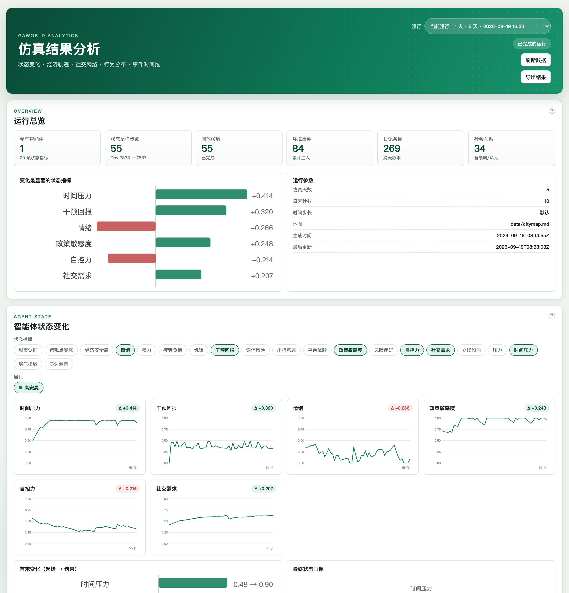

回放、分析与导出¶
运行结束后，用轨迹查看居民做了什么，用状态历史比较变化，再用日志和记忆回查具体经历。本章从读取一位居民的压力记录开始，解释输出字段与保存方式。
找到本次运行¶
在控制台确认当前城市或世界，在回放与 Analytics 中选择对应运行。轨迹归档有独立的运行编号；其他文件通常保存在当前输出目录，分析前同时核对文件时间和居民编号。


先选择运行，再拖动时间轴查看行动。点击查看完整截图。¶
查找结果文件¶
本地 Python 可打印当前配置中的状态路径：
from pathlib import Path
from gaworld.settings import build_config
config = build_config()
path = Path(config["state_output_dir"]) / "agent_state_history.csv"
print(path.resolve())
默认工作区的输出位于 output/；城市运行使用城市对应目录，团队世界使用服务器上的 output/worlds/<id>/。网页世界选择通过会话管理，本地代码读取本地配置。
以下路径相对于本次运行的输出根目录，部分文件随相应功能启用后生成：
路径 |
内容与用途 |
|---|---|
|
居民状态长表，用于绘图和条件比较 |
|
当前轨迹，用于回放行动与位置 |
|
按运行编号归档的轨迹 |
|
整体及居民日志，用于定位执行错误与决策过程 |
|
居民记忆、状态、技能与关系记录 |
|
收支账本、财富快照与宏观经济状态 |
|
社交网络图 |
|
插件写入的结构化事件流 |
|
干预评估序列 |
|
工作队列、任务状态与产物 |
读取一位居民的压力记录¶
agent_state_history.csv 使用长表：一行对应一个居民、一个记录序号下的一项指标。
字段 |
含义 |
本例 |
|---|---|---|
|
居民编号 |
|
|
该居民该指标的记录序号，从 0 开始 |
|
|
状态指标名称 |
|
|
该指标在此条记录中的值 |
|
step 由写出程序枚举状态序列得到，表示记录顺序。要判断某条记录对应第几天或几点，需要结合该次运行的时间配置与轨迹。stress 的状态范围为 0–1，数值越大表示模型中的压力越高；其他指标按各自定义解释。
下载 baseline-state.csv 和 inspect-results.py，放在同一目录。这个 CSV 是合成教学数据，1 号居民的记录为：
agent_id,step,metric,value
1,0,stress,0.41
1,1,stress,0.42
1,2,stress,0.43
1,3,stress,0.44
1,4,stress,0.45
1,5,stress,0.46
在已安装 GAWorld 依赖的环境执行：
python inspect-results.py baseline-state.csv --agent 1
脚本检查字段，筛选居民和 stress，按 step 排序，输出记录与 Final stress: 0.460，并在 CSV 同目录保存 stress-agent-1.svg。

本例的输出图。横轴为记录序号，纵轴为 stress。¶
分析自己的运行时，把命令中的 CSV 路径换成前面打印的实际路径，居民编号换成参加该次运行的编号：
python inspect-results.py /实际路径/agent_state_history.csv --agent 1
如果筛选后没有记录，检查居民是否参加运行、CSV 是否属于本次输出，以及 metric 列是否含有 stress。实际运行的曲线和终值由模型与配置决定。
在 Analytics 中阅读¶
选择与回放相同的运行，查看状态、经济与社交变化。需要解释曲线中的转折时，回到该居民同一时段的行动、日志和记忆。


运行选择与分析总览。点击查看完整截图。¶
读取结构化事件¶
Recorder 将插件事件按表保存成 JSONL，每行一条记录。先在本次输出的 records/ 中确认有哪些文件，再读取所需事件表：
import json
from pathlib import Path
record_path = Path("实际输出目录/records/agent.step.jsonl")
with record_path.open(encoding="utf-8") as stream:
for line in stream:
row = json.loads(line)
print(row)
事件字段由写入它的插件定义，具体接口见 记录与记忆。工作产物结合 work/queue.jsonl 的任务状态与居民任务目录读取。
保存可复查的结果¶
轨迹自动按 run_id 归档。状态 CSV、日志和经济文件等仍使用相应输出路径，后续运行或重置可能更新这些文件。一次实验结束后，把所需输出与配置一起复制到独立目录，记录城市、居民输入、模型、种子、时长、步长和干预。
平行世界已经为各条件分开输出，在 experiment.json 中保存路径；报告字段与解释示例见 平行世界与对照实验。
一个数值从哪里来¶
居民状态更新后保存在各指标的历史序列中；generative_city_sim.py 的状态导出按居民和指标枚举序列，写出 agent_id,step,metric,value。Analytics 从选定目录读取这些记录；本页脚本直接读取同一个 CSV。轨迹由 visualizer 单独记录帧与运行元信息，所以状态行号与轨迹时刻需要按本次运行对应。
代码结构与执行流程¶
模块分工¶
源码位置 |
职责 |
|---|---|
记录仿真帧，写入实时轨迹及按运行编号归档的轨迹。 |
|
发现实时、归档及情景实验中的可回放运行。 |
|
读取状态、经济、社交与行为文件，生成分析页的数据。 |
|
定位当前世界的记录、日志、记忆和运行根目录。 |
|
把统一事件表写成 JSONL 文件。 |
|
读取分析接口，展示所选运行的统计与图表。 |
执行流程¶
仿真与插件 → 轨迹 / 状态 CSV / 事件 JSONL
→ replay_runs 发现运行 → 回放页面
→ analytics 按目录读取 → Analytics 图表
visualizer 在写入实时 simulation_trace.json 的同时维护 visualization/runs/<run_id>/ 下的轨迹归档。replay_runs 读取轨迹元信息建立运行列表；Analytics 按调用方选定的目录汇总文件。统一事件流由 Recorder 按表写入，经济和记忆等模块也保存各自的结果。
从哪里修改¶
新增分析图表时，同时检查 apps/analytics.py 的数据读取和 analytics.js 的展示。新增结构化事件时，查看 Recorder 及对应插件的记录调用。读取网页当前世界的数据时，通过 world_paths.py 解析路径。